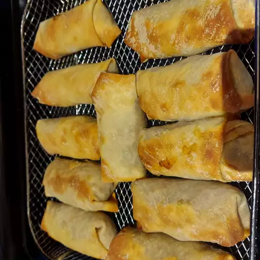

Spring Rolls

This recipe is for spring rolls.
It is made with vegetables, pork, rice noodles, and wrappers.
Its a delicious food that can be eaten with rice or as an appetizer!
Ingredients
- Spring roll wrappers (10)
- Sliced pork (300 grams)
- Shredded carrots (1), shitake mushrooms (50 grams), cabbage (100 grams), onions (1/2)
- Sesame oil (1 tsp)
- Bean Sprouts (1 bag)
- Soy sauce (to taste)
- Salt and Pepper (to taste)
- Water and cornstarch (small dish)
- Canola oil for the pan
Steps
- Cut all the veggies and put aside
- Put some oil in a pan and put on medium heat
- Once heated, add the pork and cook until done
- Once the pork is done take it out of the pan and put aside
- Add the cut veggies to the pan and cook until mostly soft
- Add back the pork
- Add salt, pepper, and soy sauce to taste
- Put a lid on the pan and let steam until all veggies are soft
- Once done turn off the heat and let it cool
- Prep a small dish with water and cornstarch mix and a plate for rolls and wrappers
- Once the veggies are cool, begin to make the rolls
- Place a wrapper in front of you and put a small amount of the veggies and pork in the middle of the wrapper
- Fold the sides over and roll to the top. Put the water slurry on the top and fold it over
- Repeat for all wrappers
- Heat oil in a pan
- Place rolls in the oil and flip when they turn golden brown
- Remove when golden all around